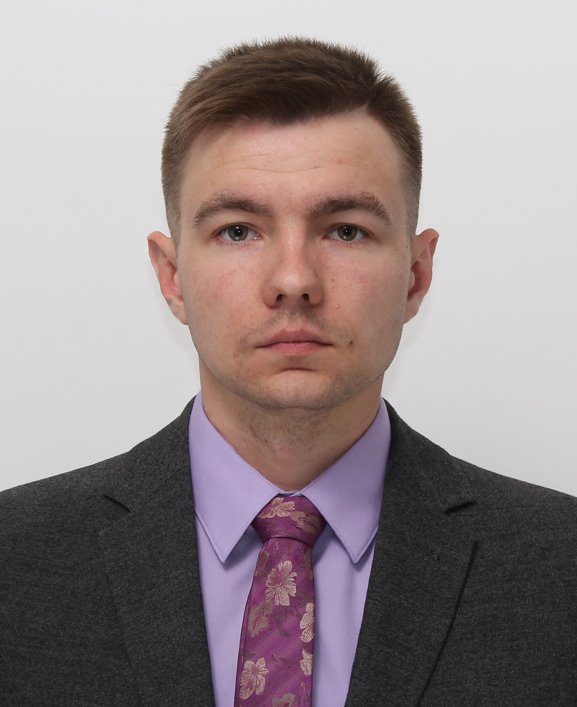

Mobile number: +37529-2961674
E-mail address: Cejosoll@gmail.com
I've been working in the sphere of political analysis and open source intelligence for more then 5 years but I've decided to change my occcpation and lifestyle. Among my main priorities are possibilities of personal development, ability to choose your occupation basing on your skills and wishes. I have no skills in programming but i'm an adaptable and goal oriented person with good aptitude.